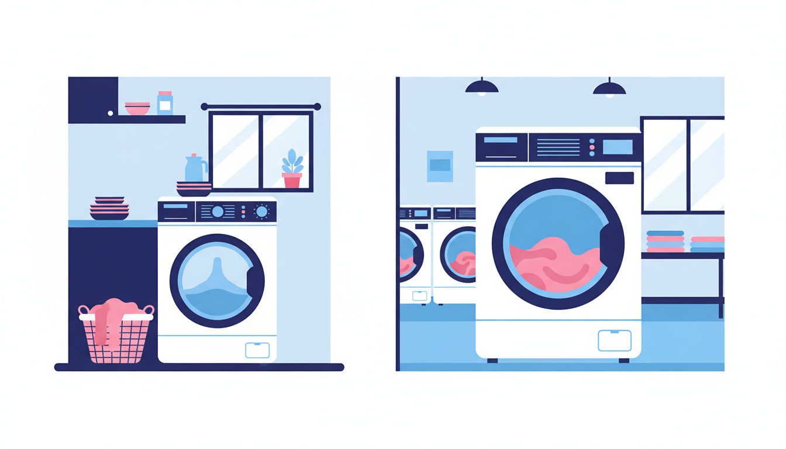

It's a question most Melburnians have asked themselves at some point: should I just wash everything at home, or is it worth heading to a laundromat? The honest answer is that neither option is universally better. It depends on your living situation, what you're washing, and how much you value your time.
Let's break it down fairly — because sometimes home washing is the obvious choice, and sometimes a laundromat is the clear winner.
The Case for Washing at Home
Let's give credit where it's due. If you have a washing machine at home and your loads are small and manageable, home washing has some real advantages.
Convenience is the big one. You can throw a load on while you're cooking dinner, working from home, or watching telly. There's no travel involved, no waiting around in a public space, and no need to plan your day around laundry. You just toss things in and come back when the cycle's done.
Home washing also works brilliantly for small, regular loads — a few shirts, some socks, a pair of jeans. If you stay on top of it and wash a little bit every couple of days, your home machine handles it just fine.
And of course, your machine is always available. Middle of the night? No worries. Public holiday? Doesn't matter. It's there whenever you need it.
So if you're a single person or a couple with a decent machine and you keep up with your laundry, washing at home is perfectly sensible. No argument there.
When a Laundromat Wins
That said, there are plenty of situations where a laundromat isn't just a reasonable alternative — it's genuinely the better option. Here are the most common ones.
You Live in a Share House
Anyone who's lived in a share house knows the struggle. There's one washing machine (maybe a dryer if you're lucky), and four or five people all trying to use it. You wait for someone to finish their load, but they've forgotten about it. It's been sitting in the drum for three hours. You move it out, start yours, and then someone's annoyed because you touched their washing.
It's a never-ending cycle of scheduling conflicts and passive-aggressive group chat messages. A laundromat sidesteps all of that. Walk in, grab a machine — or two, or three — and get everything done in one go without negotiating with your housemates.
Your Apartment Doesn't Have a Washing Machine
This is more common in Melbourne than people realise. Plenty of apartments — especially older ones and smaller units — don't come with a washing machine, and some don't even have the plumbing for one. If you're renting and there's no laundry hookup, your options are a portable machine in the bathtub (not ideal) or a laundromat.
For apartment dwellers without in-unit laundry, a nearby laundromat becomes a regular part of the weekly routine. It's quick, it's reliable, and you don't have to worry about flooding your bathroom.
You Have Bulky Items
This is the one that catches most people out. Your doona, quilt, weighted blanket, or king-size bedspread simply won't fit properly in a standard home washing machine. You can try cramming it in, but it won't wash evenly, it won't rinse properly, and you risk damaging your machine in the process.
Commercial laundromat machines are built for exactly this. A 27KG washer can comfortably handle a king-size doona with room to spare, so the water and detergent actually circulate through the fabric. The result is a genuinely clean doona — not one that's been awkwardly sloshed around in a machine that's too small for the job.
A single 27KG commercial washer can handle what would take 3-4 loads at home — saving you hours every week.
You Want It Done Faster
Here's something that surprises people: a trip to the laundromat can actually be faster than washing at home. At home, you're limited to one load at a time (unless you have two machines, which most people don't). A typical home wash cycle runs 45 minutes to an hour, and you might need three or four cycles to get through a full week's laundry for a family.
At a laundromat, you can run multiple machines simultaneously. Load up three washers at once, move everything into the dryers, and you've knocked out your entire week's laundry in about 90 minutes total. That same amount would take the better part of a day at home, cycling through load after load.
If you batch your laundry and do it all in one laundromat visit per week, you actually get more free time overall — even accounting for the trip.
You're Saving on Water and Energy
Commercial washing machines are significantly more water- and energy-efficient per kilogram of laundry than residential machines. They're designed to handle large loads economically, using optimised water levels and high-efficiency spin cycles that extract more water before drying.
If you're environmentally conscious — or just want to keep your utility bills in check — doing your bigger loads at a laundromat can actually reduce your overall water and electricity usage compared to running your home machine four or five times to get through the same amount of washing.
The Bottom Line
It doesn't have to be one or the other. Most people get the best results by using both.
Keep your home machine for the quick everyday stuff — a few work shirts, gym gear, a small midweek load. Then use a laundromat for the big jobs: the weekly family wash, bulky items like doonas and blankets, and anything that needs a larger machine to get properly clean.
It's a practical split that saves time, saves water, and means you're not spending half your weekend chained to your laundry.
At Laundry Day, we've set up our three Melbourne locations — Brunswick East, St Albans, and Maribyrnong — to make the laundromat side of that equation as easy as possible. Free detergent at every machine (so you don't need to bring your own), zero card fees on tap-and-go payments, and commercial-grade washers up to 27KG that can handle whatever you bring in.
Whether you're a share house veteran, an apartment renter, or just someone who'd rather not spend their Saturday doing four loads at home — give it a try. You might be surprised how much time you get back.
Try Laundry Day — Melbourne's Friendliest Laundromat
Free detergent, zero card fees, and giant machines at 3 locations across Melbourne.
Find Your Nearest Location